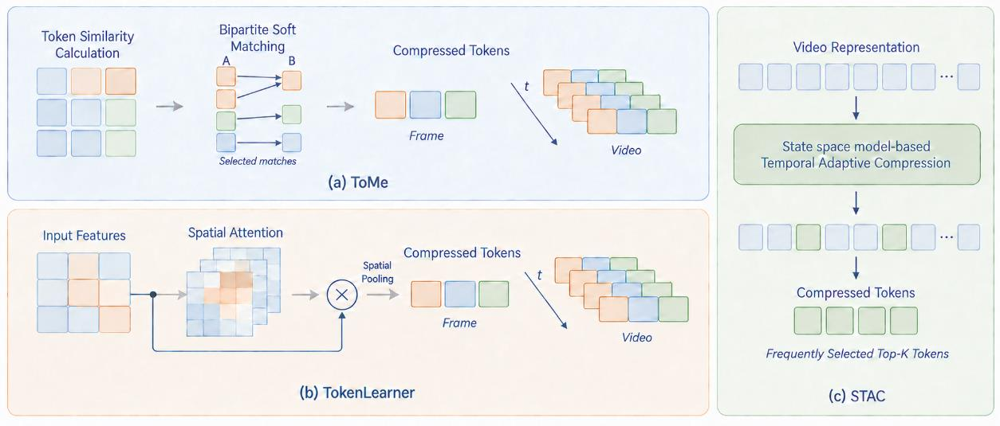

02 · RESEARCH 1
제한된 자원에서의 비디오 구간 탐색 연구
- 문제
- 비디오 언어 모델의 시간 이해 능력을 높이면서 단일 GPU에서 학습 가능한 구조 설계
- 접근
- 대표 프레임 선택 → 범주형 자연어 시간 맥락 표현 → 비디오 표현 압축
- 결과
- mIoU 62.81 · R1@0.5 71.96 · R1@0.7 46.64
- 산출물
- 1저자 논문 3편 (추계학술대회 최우수상, IEEE ICIP 2025, KCI 논문지)
역할 — 1저자로 문제 정의, 어노테이션 체계 설계, 사전학습된 VLM(BLIP-2) 기반 모델 구축, 비디오 토큰 압축 모듈 구현, 단일 GPU 파이프라인 최적화, 성능 · 연산량 분석, 논문 작성까지 전 과정을 수행했습니다.
2.1문제 정의와 평가 환경
Task
Video Moment Retrieval
비디오에서 자연어 질의에 해당하는 시작과 종료 시점을 찾아내는 태스크
Dataset
Charades-STA
- 평균 영상 길이 30.6초 · 정답 구간 8.1초
- 평균 질의 길이 7.22 단어
- 학습·검증 12,408 / 테스트 3,720
Metrics
- mIoU 예측 구간과 정답 구간의 평균 중첩도
- R1@0.5 / R1@0.7 Top-1 예측의 IoU가 각각 0.5, 0.7 이상인 비율

2.2–2.4단계적 문제 확장
1
추계학술대회 2024.11최우수상
대표 프레임 선택과 시간 관계 학습
BLIP-2는 각 프레임을 중첩된 시퀀스로 처리하기 때문에, 영상의 연속성과 장면 전환을 반영하는 방식을 채택했습니다.
- 프레임 특징을 코사인 유사도 기준으로 16개 구간에 군집화(Dynamic Programming Clustering)하고, 군집 중심점을 대표 프레임으로 선택 → 동일한 16프레임에서 정보량 증가
- BLIP-2 비전 인코더 뒤에 프레임 간 어텐션(temporal attention) 모듈을 삽입해 시간적 연속성과 장면 전환 정보 학습
mIoU +4.10%p
R1@0.5 +5.36%p
R1@0.7 +7.74%p
균등 16프레임 샘플링 및 모듈 미적용 대비
한계 프레임 선택 전처리와 추가 모듈로 연산량 및 처리 비용 증가
2
IEEE ICIP 2025.09
자연어 시간 맥락 표현과 효율적 미세조정 (TCP)
- 가설 텍스트 중심으로 사전학습된 LLM은 숫자형 시간 정보보다 자연어로 표현된 범주형 정보를 더 효과적으로 활용
- 질의의 상대적 위치를 순서형 범주로 구조화하고 영상 길이 · 지시문과 결합한 Temporal Contextual Prompt 설계
- BLIP-2에 4-bit 양자화와 Q-LoRA를 적용해 단일 GPU에서 파인튜닝
mIoU 62.41 (+3.78%p)
R1@0.5 70.16 (+0.85%p)
비교 모델 Mr.BLIP 대비
한계 장면의 전반적인 위치 파악에는 효과적이었으나, 정밀한 경계를 평가하는 R1@0.7은 44.06에 그침
3
KCI 논문지 2025.12
시간 적응형 표현 압축 (STAC)
선행 연구의 한계를 바탕으로 정밀한 시간 관계 학습과 LLM 입력 토큰 수 감축이라는 두 방향을 종합해 모듈을 구축했습니다.
- Q-Former의 비디오 표현이 Language Projection을 거쳐 고비용 LLM 연산으로 전달되는 구조에 주목, 두 모듈 사이를 압축 지점으로 설정
- 선택적 상태 공간 모델 Mamba로 프레임 간 시간 관계를 모델링한 뒤, 학습형 어텐션 쿼리로 추출한 요약 벡터를 MLP에 통과시켜 중요도 점수 산출 → 시간적 중요도가 높은 50%로 압축 (32 → 16)
- ToMe는 유사한 공간 토큰을 병합하고 TokenLearner는 학습된 어텐션으로 공간 토큰을 선택하는 반면, STAC은 시간 축에서 비디오 표현을 압축
비디오 토큰 −50%
연산량 −24.6%
추론 시간 −14.3%

2.5결과 비교
62.81
mIoU
71.96
R1@0.5
46.64
R1@0.7
| 구성 | Backbone | mIoU | R1@0.5 | R1@0.7 |
|---|---|---|---|---|
| QD-DETR | SF+CLIP | – | 57.31 | 32.55 |
| CG-DETR | SF+CLIP | 50.13 | 58.44 | 36.34 |
| UnLoc-L | CLIP* | – | 60.80 | 38.40 |
| EaTR | I3D | – | 68.47 | 44.92 |
| Mr.BLIP | BLIP-2 | 58.63 | 69.31 | 49.29 |
| Ours (+TCP) | BLIP-2 | 62.41 | 70.16 | 44.06 |
| Ours (+TCP/STAC) | BLIP-2 | 62.81 | 71.96 | 46.64 |
1×A6000(19시간) 학습만으로 4×A100(55시간) 환경의 모델 대비 mIoU · R1@0.5를 향상시켰으나, 정밀 경계 탐지(R1@0.7 −2.65%p)의 한계를 확인했습니다.
| Method | mIoU | R1@0.5 | R1@0.7 | TFLOPs ↓ | Inference ↓ |
|---|---|---|---|---|---|
| STAC | 30.2 | 34.3 | 17.1 | 12.51 | 0.30 |
| ToMe | 28.2 | 31.7 | 16.2 | 16.59 | 0.35 |
| TokenLearner | 22.1 | 25.2 | 13.2 | 15.57 | 0.37 |
STAC은 시간 축 압축으로 ToMe · TokenLearner보다 모든 정확도 지표에서 높은 성능을 기록하고, ToMe 대비 연산량 24.6% · 추론 시간 14.3%를 절감
2.6Tech Stack
Framework
PyTorchHugging Face Transformers
Multimodal Models
BLIP-2FLAN-T5-XXLMamba SSM
Efficient Fine-tuning
PEFTQ-LoRAbitsandbytesGradient Checkpointing
Training & Optimization
DeepSpeedBF16
Experiment & Profiling
TensorBoardcalflops